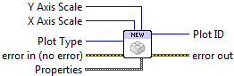

New Plot ID¶
Create a new plot. You can choose between rectangular axes (default) or polar axes. See Making Polar Plots for more information on using polar plots.
Outputs a new PlotID, which can be passed to plotting or rendering VIs. You must eventually close this identifier with Close Plot ID or resource leaks will result.
 Plot Type
Plot Type- Choose between rectangular (default) and polar axes.
- X Axis Scale
- Set scale type for the X axis (linear, log, or symlog; see below). For polar plots, only linear scales are supported. Requesting a log or symlog scale will result in 402906 - Operation Not Supported for Axis Scale.
- Y Axis Scale
- Set scale type for the Y axis (linear, log, or symlog; see below).
- Properties
Property cluster, available under the “Properties” subpalette.
 Background Color
Background Color- PlotColor or LabVIEW color setting the plot background (everything outside the axis bounds).
- Axis Background
- PlotColor or LabVIEW color setting the background color within the axis bounds.
 Left Margin
Left Margin- Space between the left axis and the edge of the plot, expressed as a fraction of the plot width. Example: 0.25.
- Right Margin
- Space between the right axis and the edge of the plot, expressed as a fraction of the plot width. Example: 0.25.
- Bottom Margin
- Space between the bottom axis and the edge of the plot, expressed as a fraction of the plot height. Example: 0.1.
- Top Margin
- Space between the top axis and the edge of the plot, expressed as a fraction of the plot height. Example: 0.1.
- Aspect Ratio
- Set the pixels-per-data-unit ratio between the X and Y axes. By default, the aspect ratio is “floating” and changes automatically when the plot is resized. Polar plots always have 1.0 aspect ratio.
 Plot ID
Plot ID- New plot identifier. You must eventually close this with a call to Close Plot ID, or resource leaks will occur.

 Error In/Out
Error In/Out- Terminals for standard error functionality.
Example¶
Download Getting Started.vi,
or see Examples for a complete list of examples.
Errors¶
About scales¶
Linear scales are the default, and can display positive or negative values.
Logarithmic or log scales are used to display data which range over many orders of magnitude, but can only display positive data. The log base is 10.
Symmetric log, or symlog scales are a hybrid. They can display positive or negative data; a linear plot is used for a region around the origin. The log base is 10.
Other information¶
Margin values may be negative or greater than one, in which case the axis will extend off the side of the plot. If non-finite, the default values will be used.
If Aspect Ratio is zero, negative, or non-finite, the default ratio will be used.